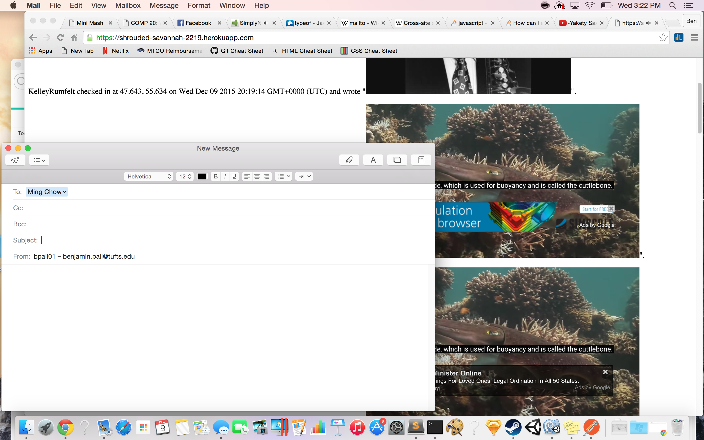

by Ben Pall
For her Comp 20 Assignments 2 and 3, Anne was required to perform the client and server side web development of a location-based messaging system. Users can check in at their location and leave a message for other users, who can then access a map that displays everyone's locations and messages. For this assignment, I was required to test Anne's system with and without access to the source code to find and report security vulnerabilities.
To evaluate Anne's software, I first performed "black box testing," or testing without access to her source code. I tried to attack the software in a few ways, to varying degrees of success. Then, I received her source code, and performed "white box testing" with it. To assist with these tests, I used Postman, a popular alternative to curl with a graphical user interface. Postman is a Chrome app capable of performing HTTP POST operations. I also used the developer tools that come built in to the Chrome browser.
I found a few security vulnerabilities in Anne's software. First, she does not provide adequate filters to check if users are trying to put malicious code on her website. (This is known as cross-site scripting.) Second, when users ask her database for information, there is no limit to how complex they can make their requests, and some requests can be so complex that they crash the whole database. On the other hand, I would like to commend Anne on her code that assures that users cannot create database documents with unintended fields.
This issue is highly severe, as Anne's entire website can be compromised. Cross-site scripting occurs when user-generated content is displayed on a website. With Anne's sendLocation URL, users can include malicious scripts as part of their requests to display content on the webpage. I discovered this vulnerability when I used Postman to post a message to the server containing a script within HTML script tags. In the screenshot below, I have injected YouTube videos that autoplay when the page is loaded. I have also generated a url that opens an email message. In reality, attackers can abuse this vulnerability for much more sinister purposes. One way to prevent this issue is to sanitize user input on the server side. For example, once the date reaches the server, the first thing that happens is that all special characters are removed from the server. After all, you never ever trust user input.

This issue is moderately severe, since the worst thing anyone can do is crash the database so it doesn't serve data temporarily. Currently, Anne's database is searched when users access her /latest.json URL. Users can input queries to make the system output certain documents from its mongo database. If users are malicious enough, they can make queries with non-terminating for loops that will execute until they crash the database. I discovered this issue while typing strange queries into the url bar after "https://shrouded-savannah-2219.herokuapp.com/latest.json?" To address this issue, Anne could put measures into place that assess these queries or have them time out after a certain period of time.
I would like to commend Anne for her diligence in preventing against this last issue, even though it is not very severe. In fact, the worst it would be able to do is take up extra space in Anne's database! Here's how it works: normally, no restrictions exist on the content of a POST request. Anne's /sendLocation URL takes in four fields- "login", "lat", "lng", and "msg", but more fields can be in the post than those four. However, when I tried to submit a post that also included a "fun" field, I received, "{"error":"Whoops, something is wrong with your data!"}" This is because of the following code in Anne's assignment 3:
var login = req.body.login;
var lat = req.body.lat;
var lng = req.body.lng;
var msg = req.body.message;
if (typeof login === 'string' && !isNaN(lat) && !isNaN(lng) && typeof msg === 'string'){
db.collection('people', function(err, col){
if (loginlist.indexOf(login) != -1){
col.insert({'login': login, 'lat': Number(lat), 'lng': Number(lng), 'message': msg, 'time': new Date()});
col.find().toArray(function(error, result){
res.send(result);
});
}else{
res.send({"error":"Whoops, something is wrong with your data!"});
}
});
}else{
res.send({"error":"Whoops, something is wrong with your data!"});
}
Anne creates an object from the specific terms she was looking for in her request. If she had simply dumped the contents of the request into her database, users could have filled her database with unnecessary, useless information.
Ultimately, Anne's software does some things right, but it is still in a dangerous place when it comes to security. If she needs persuasion as to whether she should improve her security, I'll leave her with this. It is plain to see that I did a lot of damage to her website in my XSS screenshot. If that much damage can occur when someone with moderate experience and good intentions pokes around with her site, imagine how much damage can be done by someone very evil with a lot more experience. If Anne expects people to use this software, she has no choice but to improve its security.